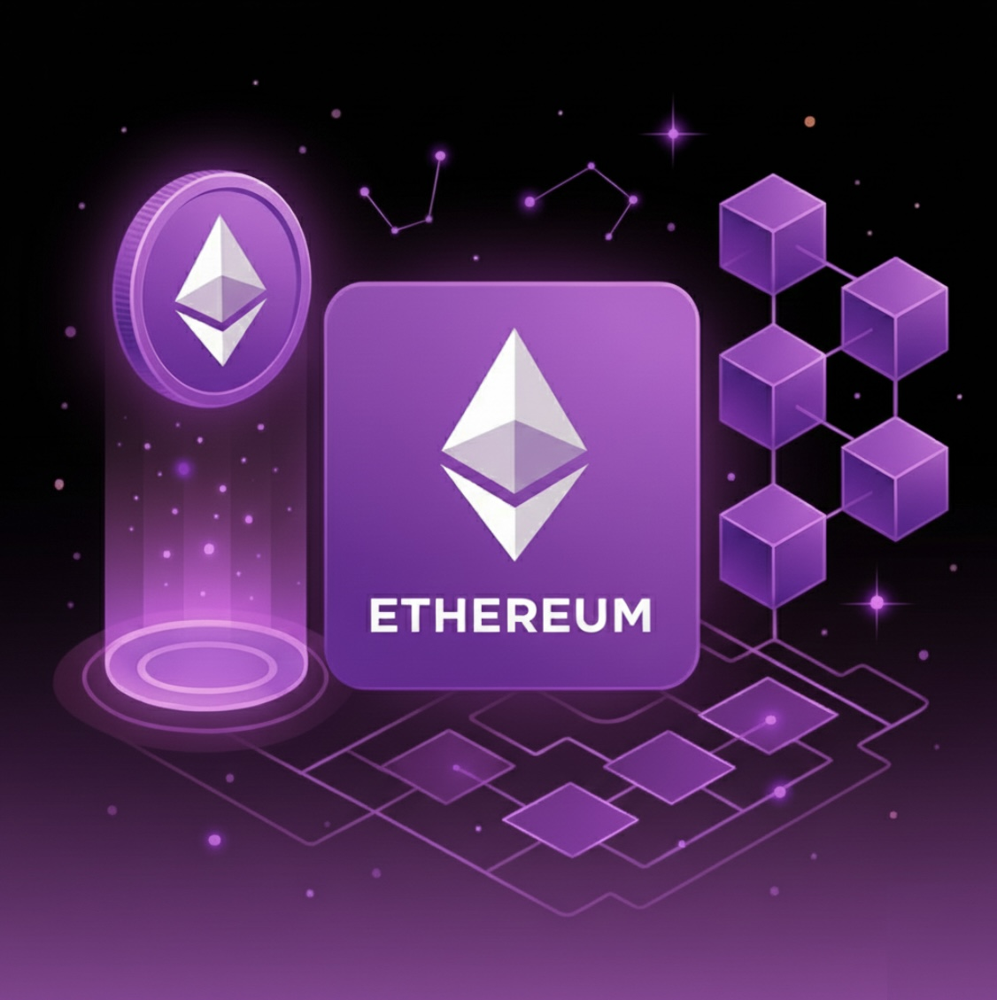

Το Ethereum είναι ένα αποκεντρωμένο blockchain που επιτρέπει τη δημιουργία smart contracts και αποκεντρωμένων εφαρμογών (dApps).

Με το Proof-of-Stake, υποστηρίζει χιλιάδες εφαρμογές παγκοσμίως και βελτιώνει συνεχώς την απόδοση και την επεκτασιμότητά του.
Τα gas fees εξαρτώνται από τη ζήτηση του δικτύου και την πολυπλοκότητα της συναλλαγής.
Το Ethereum βασίζεται σε λίγες, βασικές τεχνολογίες που το κάνουν τη μεγαλύτερη πλατφόρμα για smart contracts και dApps.
Αυτόματα προγράμματα που εκτελούνται στο blockchain χωρίς μεσάζοντες.
Οι validators «κλειδώνουν» ETH για να επικυρώσουν συναλλαγές και να ασφαλίσουν το δίκτυο.
Η μηχανή που εκτελεί τον κώδικα των smart contracts σε κάθε κόμβο του δικτύου.
Δίκτυα όπως Optimism και Arbitrum μειώνουν τα fees και αυξάνουν την ταχύτητα.
Αυτές οι τεχνολογίες κάνουν το Ethereum την πιο ευέλικτη πλατφόρμα για DeFi, NFTs και Web3.
Το Ethereum συνεχίζει να εξελίσσεται με στόχο τη μεγαλύτερη κλιμάκωση, χαμηλότερα fees και μαζική υιοθέτηση του Web3.
Το Ethereum αποτελεί τη βάση του Web3 και παραμένει το πιο σημαντικό blockchain για smart contracts και αποκεντρωμένες εφαρμογές.